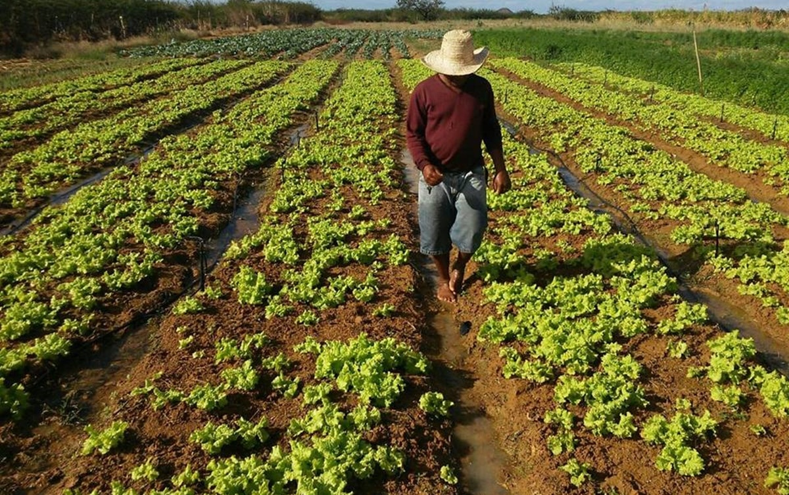
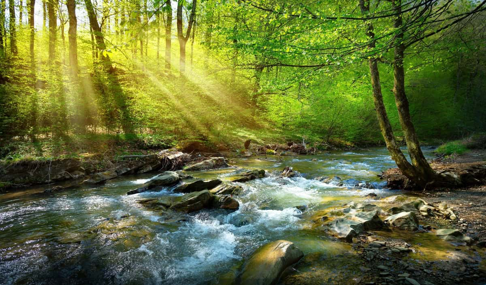
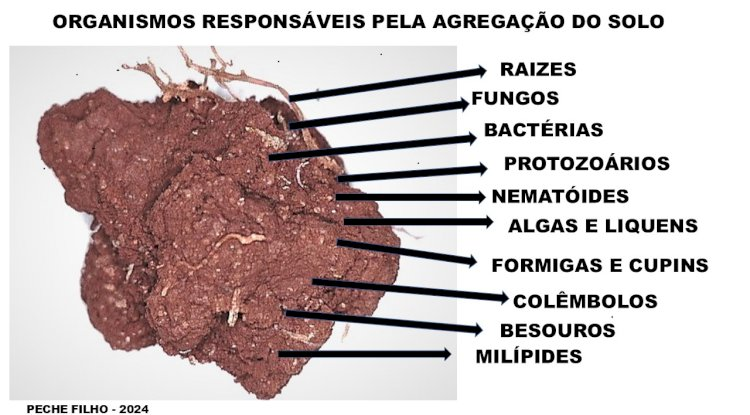

Dia Nacional da Conservação do Solo

O solo fornece nutrientes essenciais para o crescimento das plantas.

O solo ajuda a preservar ecossistemas e regula o clima.

Milhares de seres vivos dependem do solo para sobreviver.
O solo é um dos recursos naturais mais importantes para a vida no planeta Terra. Ele é essencial para a produção de alimentos, pois fornece nutrientes e sustentação para o crescimento das plantas, que fazem parte da base da alimentação humana e animal.
Além disso, o solo atua diretamente no equilíbrio ambiental, ajudando na absorção e filtragem da água da chuva, prevenindo enchentes e contribuindo para a recarga dos lençóis freáticos.
Outro ponto importante é que o solo serve como habitat para diversos organismos vivos, como fungos, bactérias e insetos, que ajudam na decomposição da matéria orgânica e na manutenção dos ecossistemas.
Por isso, a conservação do solo é fundamental para evitar problemas como erosão, perda de nutrientes e desertificação, garantindo a sustentabilidade e a preservação do meio ambiente.